15. Jump trees¶
In this practice we are going to program a game similar to the dinosaur game that appears in the Chrome browser when there is no Internet connection. A dinosaur will run all the time to the right of the screen while trees appear that you will have to jump over to avoid colliding with them.

We start the Scratch editor.
Press the language button
 in the top bar and choose English.
in the top bar and choose English.We delete the cat object by clicking on the trash can icon.

Next we add a new character, a dinosaur.
Press the button choose an object
 .
.We look in the Animals section.
and select the Dinosaur4 object.
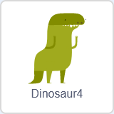Now we will create the variable speed that will store the jumping speed of the dinosaur. At the beginning of the jump this speed will be positive, but it will decrease until it becomes negative when the dinosaur falls to the ground.
Press the variables button
 ,
,click on create a variable
 .
.We change the name of the variable to speed
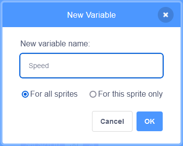Finally, click on the OK button.
Now we will create the variable points that will store the points we get during the game.
Press the variables button
,click on create a variable
.We change the name of the variable to points
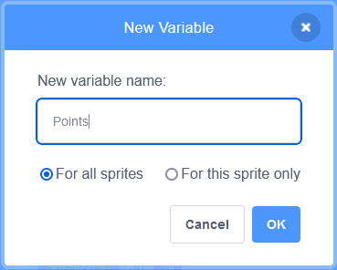Finally, click on the OK button.
We created three different Start, Jump and Finish blocks that we will code later.
We are now ready to create our first dinosaur program. When the program starts, it will start the variables and positions, after waiting a second it will send the order to play to all the objects and it will forever be in charge of making the dinosaur jump and checking if the program has finished.
In this type of Top-Down programming, we first define this main routine and then we will detail each of the secondary subroutines.

To continue, we define the commands of the Start block. This block will clear the screen, place the dinosaur in its starting position, show it the proper size and costume. It will also establish the initial values of the variables and their display on the screen.
Remember to click on the add extension button and choose the Pencil extension to be able to use the green instructions like
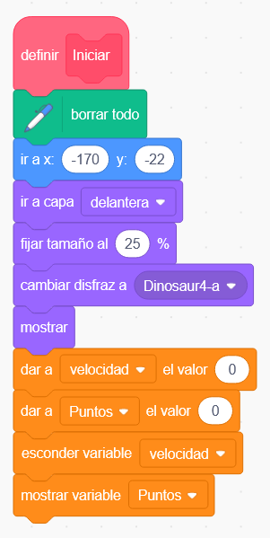Delete All.We will also program the Jump block. This block calculates the speed of the jump when the dinosaur is above the ground, so that it rises with less and less speed until it begins to fall back towards the ground. This program simulates the force of gravity and the dynamics of a real jump.
Once on the ground (y position < -32), the dinosaur will return to zero velocity.
When we press the space or up arrow keys, the dinosaur will jump up again with an initial speed of 10.

The Finish block is responsible for checking that the dinosaur has collided with a tree. In this case, an image of the dinosaur with its mouth open is copied on the screen, so that it does not move. Sends the message Die to all other objects and ends the program.

To continue, we will program the behavior of the point marker at the start of the game. This scoreboard must continually score points until the game ends.

In order to achieve more realistic movement, from the moment the game starts we are going to change the dinosaur's costume continuously to make it look like it is running.
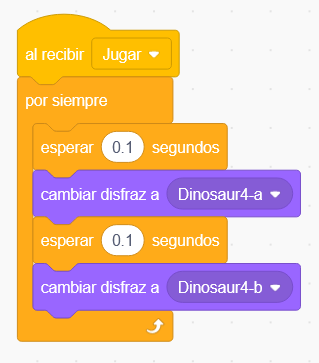Press the green flag
 to test the operation of the program.
to test the operation of the program.The dinosaur will run while staying in a fixed position on the screen. When we press the space or up arrow key, the dinosaur must jump up and fall again.
Now we are going to add a floor to the game. We must click on the option to paint an object so that a new object appears in the game.

In the costumes tab we draw a line with gray fill and brightness 50, with gray border 50 and thickness 6.
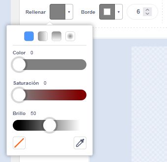 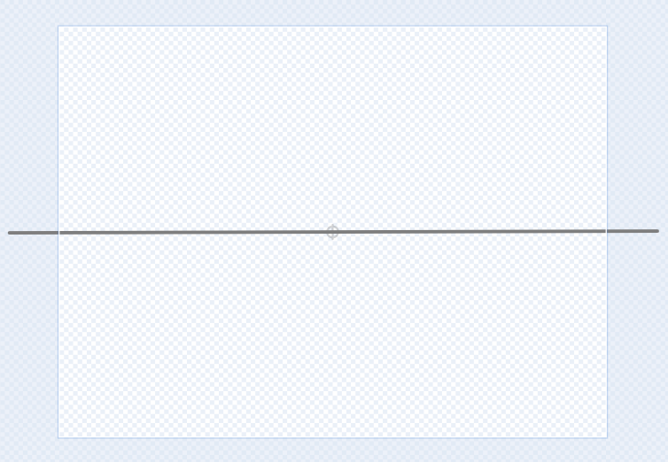The line should protrude from both sides of the screen to ensure that it will cover the full width of the screen when displayed.
We can now switch to the code tab to carry out the program, which will be very simple. It will only display the line at the proper position.
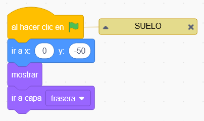Finished the floor, we are going to add the trees to the game. Added a new character, Trees.
Press the button choose an object
.We look in the All section.
and select the Trees object.
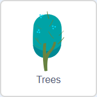In the costumes tab we will delete the tree called Trees-b. Next we will duplicate the tree called Trees-a by clicking with the right mouse button on its image.
Once duplicated, another image will appear called Trees-a2 that we are going to modify so that it contains two trees.
With the selection tool We select the entire tree and duplicate it with the copy button and the paste button.
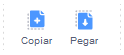To finish, we move the newly copied tree so that it sits next to the first tree.
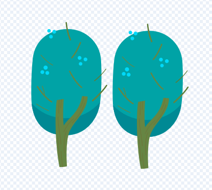We carry out the same operation as in the previous point, duplicating the tree costume and duplicating the initial tree twice so that this time we have a costume with three trees in total.
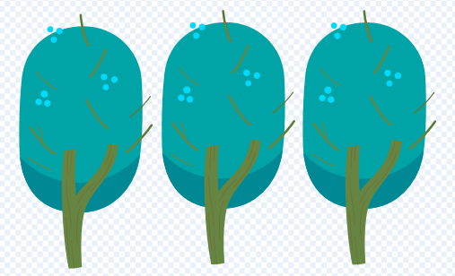Once the costumes of the trees are finished, we are going to complete the code of the program. We start at the start which erases everything, places the trees on the right of the screen at 20% size and hidden from view.
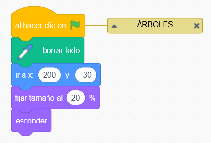Upon receiving the Play message, the code will begin to create clones of the trees in a random costume. Between one clone and another we will wait a random time between 1.5 and 3.5 seconds.
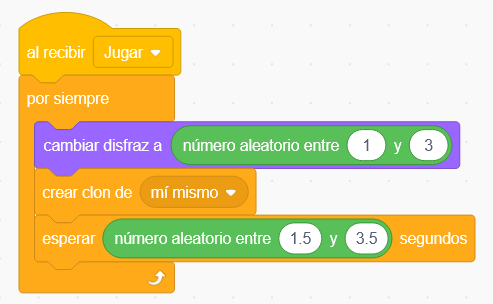Whenever you start out as a clone of a tree, it should be displayed on the screen and wait until it hits the left edge. At that point we will apply a fade effect and delete the clone.
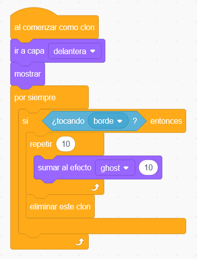In order for the trees to move to the left, giving the impression that the dinosaur is running to the right, you have to add the following code that moves the tree for each clone.
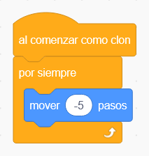To end this code, upon receiving the message that the dinosaur Dies, we must seal the clones on the screen and eliminate them.

We only have the task of adding a "Game Over" message when the game ends. Click again on the option to paint an object.
We write the Game Over message with the Text tool, Fill in black and the Pixel font.
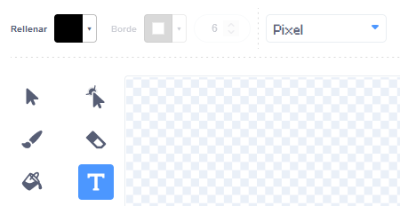
Now all that remains is to complete the code that hides the message until the program ends, at which time it should be displayed.
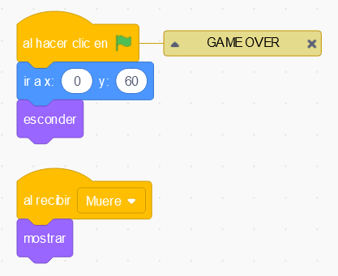Press the green flag
to test the operation of the program.
{kind=link}
{kind=link}
{kind=link}
{kind=link}
{kind=link}
{kind=link}
{kind=link}
{kind=link}
Challenges¶
Increase acceleration in jumping to make the game more difficult. To achieve this, subtract from the speed, in the Jump block, a greater number. Try various values until you find one that works, but makes the game more difficult.
Adds a spinning move to each jump of the character.
When the points have a value greater than 1000, increase the difficulty of the game by making trees appear more frequently (every less time).